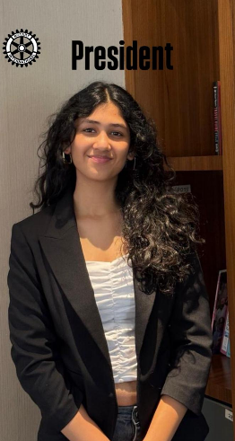
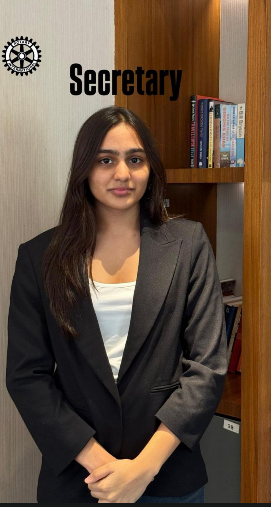
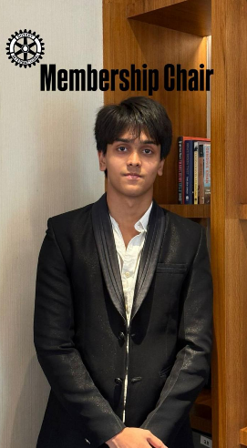
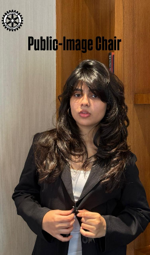
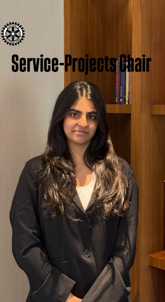

A diverse, passionate group of young leaders who give their time, energy, and heart to serve the community of Mumbai Versova.
The core team steering Rotaract Versova's mission, projects, and community engagement.

Founder of the Rotaract of Mumbai Versova, she leads the club's vision, strategy, and every project with passion and purpose.

Keeping the club organized, on-schedule, and connected to District 3141.
Eager to collaborate and build strong connections, ensuring things stay structured and efficient behind the scenes for the club.

Growing our family of changemakers and welcoming new Rotaractors into the fold.

Crafting our story and connecting with the community through creative communication.
Promoting Rotary initiatives, encouraging contributions, and raising awareness of humanitarian projects.

Conceptualizing and executing service projects that create genuine community impact.
Every project is powered by the dedication and passion of our incredible member volunteers.
The backbone of every project, present at every event.
Contributing their skills to specific projects and initiatives.
Heading specialized teams across service, community, and more.
Former Rotaractors who continue to guide and support the club.
Want to see your name on this page?
Join Our Team →We operate under the mentorship and support of the Rotary Club of Mumbai Versova — collaborating on major projects like Project Aashray (6000+ clothes) and our weekly Sunday food drives.
Their guidance, resources, and shared values help us scale our impact and serve more people across the community.